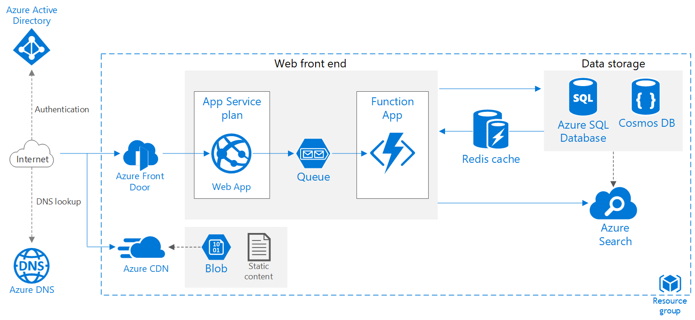
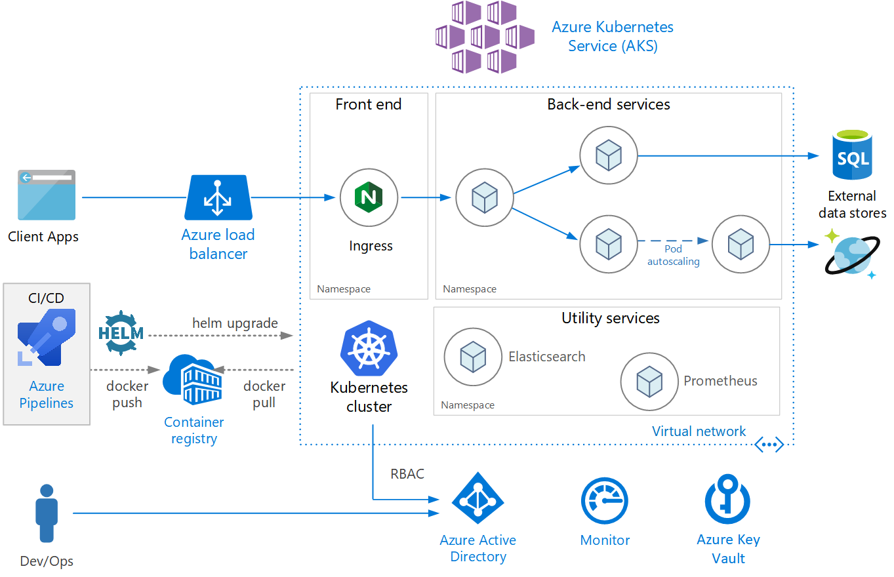

Getting Stuck in the Cloud
An Overview of Azure Product Offerings
Kevin Feasel (@feaselkl)http://CSmore.info/on/thecloud
Who Am I? What Am I Doing Here?


Motivation
Today's talk will introduce you to "the cloud" and provide an introduction to one cloud: Microsoft Azure.
We will review key concepts around whether the cloud makes sense, hiring for the cloud, pricing in the cloud, and review several cloud workloads.
Agenda
- Cloud Basics
- Pricing in the Cloud
- Getting a Feel for Azure
- Scalable Web Application
- Azure Data Platform
- BOPIS
- Microservices with AKS
What is the Cloud?
"The cloud" is simply a term describing a network of servers. There are four common types of cloud:
- Public cloud: services provided to the general public over the Internet.
- Private cloud: services provided on a private internal network. Typically on-premises.
- Hybrid cloud: services shared between public and private clouds.
- Community cloud: services and resources shared between distinct organizations.
What is Azure?
Azure is Microsoft's cloud offering. Microsoft provides a variety of services in Azure, ranging from virtual machine that you control all the way to software products like Microsoft Office.
Who are the Competitors?
There are two key players: Amazon Web Services (AWS) and Azure. Google and Alibaba are second-tier, and a variety of third-tier providers (IBM, Oracle, Tencent) follow.
Who are the Competitors?
Everything-as-a-Service
Product offerings break down into three key categories: Infrastructure-as-a-Service, Platform-as-a-Service, and Software-as-a-Service.

Key Questions to Ask
Here are several key questions you should ask yourself to determine whether you should investigate migrating into the cloud, and if so, to what extent.
Key Questions to Ask
1) What is your goal?
There are several viable goals for a cloud migration, such as:
- Reducing costs
- Improving performance
- Improving scalability
- Reducing administration work
Note that these goals might be in tension with one another, so you may need to rank priorities.
Key Questions to Ask
2) What is your current infrastructure?
Keeping your current infrastructure will act as the opportunity cost of moving to the cloud. Considerations include:
- Do you own your own data center, are you renting space, or do you keep servers in a closet somewhere?
- What are your current data center costs?
- Is your hardware near end-of-life?
- Is your hardware slow for the workloads you expect?
- Are you running close to the limit on those machines? Or maybe they're way overpowered?
Key Questions to Ask
3) What is your plan?
Which of the following makes the most sense to you?
- I want my company to be cloud-only--I do not want any on-premises servers.
- I want my company to be cloud-first--new solutions should be biased toward the cloud, but we recognize some products need to stay on-premises.
- I want a hybrid approach of cloud and on-premises. Some solutions or servers should remain on-premises and some solutions or servers should go into the cloud.
Key Questions to Ask
4) How much cloud experience do you have?
Key considerations here include:
- How many developers or architects have relevant cloud experience?
- How many operations personnel have relevant cloud experience?
- What is your strategy to get this experience?
Hiring is a possible strategy for building up skills.
Hiring for the Cloud
Which of the following best suits your needs?
- Consultant
- Contractor
- Full-time employee
Hiring for the Cloud -- Consultants
Bring in consultants under the following circumstances:
- You want to figure out if a cloud is right for you, or if so, how to maximize value.
- You want to build up the skills of existing employees (FTE or contract).
- You expect knowledge transfer or over-the-shoulder work rather than hands-on operation.
- You are interested in a proof of concept or an architectural design for a pilot.
Consultants are guides but won't carry you up the mountain.
Hiring for the Cloud -- Contractors
Bring in contractors under the following circumstances:
- You are interested in a pilot.
- You have some employees with cloud experience but need temporary staff augmentation as others get skilled up.
- You want somebody to check over the work you have done and make modifications as desired.
Contractors fill empty seats quickly and can help skill up employees, but they won't be there forever.
Hiring for the Cloud -- Full-Time Employees
Bring in full-time employees under the following circumstances:
- You are interested in developing a full product implementation.
- You have few or no current employees with relevant cloud experience.
- You have a good hiring process in place, especially if you don't currently have those skills on your team!
- You are okay with taking "the long view" with employees and build up skill over time.
You'll need cloud-proficient full-time employees over time; consultants and contractors aren't enough.
Hiring for the Cloud -- Full-Time Employees
Augment or Replace?
Can you invest in your current employees? Hopefully so!
Augment whenever possible. Cloud migrations aren't overnight and most skills are still relevant post-migration.
Hiring for the Cloud -- Who?
One myth of hiring for the cloud is the idea that you can get rid of administrators. This is not true! In the cloud, these people:
- Deal with Active Directory (e.g., Azure Active Directory)
- Own and manage virtual machines
- Configure the network, including links from on-premises to the cloud
- Manage and apply network security rules
- Configure and manage virtual private networks (VPNs)
- Deploy, monitor, and manage cloud-based services
Hiring for the Cloud -- Mixed Ops
The type of administrator who thrives in the cloud engages in "mixed" ops: DevOps, DataOps, MLOps, etc. This means:
- Infrastructure as code: scripting or programming
- Deploy assets programmatically rather than through the web interface
- Use source control and create build processes
As a bonus, ops people have a clear signal for improvements: saving money by optimizing queries or handling load more efficiently.
Scaling in the Cloud -- The Dream
Technical sales personnel for cloud organizations will sell you on limitless scale:
- Scale up as you need it and down when you don't--seamlessly!
- Save money by scaling down or even turning off services after hours
- As your company grows, scaling up is as simple as manipulating a slider
Scaling in the Cloud -- The Reality
Scalability is real, but it comes with certain costs.
- Downtime typically happens when switching performance tiers, especially for things like database servers.
- Scaling may require a downtime window, and you won't know exactly how long that window will be.
- Scaling has its practical limits.
- Pricing is usually linear with respect to scale.
Scaling in the Cloud -- The Advice
The best scalability scenarios are around seasonality, followed by "office hours."
Take a close look at which services can scale without downtime and which require downtime. Some services, such as web servers, can scale horizontally with no downtime. Others, like database servers, cannot.
Serverless Technologies
Cloud providers can also offer "serverless" products--you don't manage any of the infrastructure, but can execute code. These can be much less expensive in cases where you'd otherwise use a small percentage of a server's capacity.
Examples of serverless products in Azure include:
- Serverless SQL pools in Azure Synapse Analytics
- Azure SQL Database serverless compute tier
- Azure Functions
Agenda
- Cloud Basics
- Pricing in the Cloud
- Getting a Feel for Azure
- Scalable Web Application
- Azure Data Platform
- BOPIS
- Microservices with AKS
The Billing Model
Cloud providers generally use a pay-for-use model with monthly billing. This is a Operating Expenditures (OpEx) billing model.
On-premises hosting is typically financed via Capital Expenditures (CapEx).
OpEx tends to be the easier method to gain budgetary approval from accounting.
The Cost of Everything
With cloud providers, almost everything has a price.
- Data ingress? Usually free
- Data egress? Pay
- Data storage? Pay
- Compute? Pay
- Network utilization? Pay
- High availability? Pay
- Faster performance? Pay
That said, some services are free or have free tiers.
The Calculator
Azure has a fully-featured pricing calculator.
Points of Confusion around Pricing
1) Complexity with the Pricing Calculator
One common complaint about cloud pricing calculators (not just Azure's!) is the complexity.
Another is that pricing terminology changes between services.
If you are new to Azure or to a particular Azure service, you will likely underestimate the actual cost.
The Calculator -- Azure Synapse Analytics
The Calculator -- Azure Synapse Analytics

The Calculator -- Azure Synapse Analytics
The Calculator -- Azure Synapse Analytics
The Calculator -- Azure Synapse Analytics
The Calculator -- Azure Synapse Analytics
The Calculator -- Azure Synapse Analytics

Points of Confusion around Pricing
2) Tiers, SKUs, and More
Each offering in Azure tends to have multiple tiers. The terms "Basic," "Standard," and "Premium" give you an idea of relative quality, but what they provide can differ drastically between services.
For an example of the extreme, there's Azure SQL Database...
Azure SQL Database Service Tiers
- DTU Model
- Basic
- Standard
- Premium
- vCore Model
- General Purpose
- Business Critical
- Hyperscale
- Serverless
Points of Confusion around Pricing
3) Cross-product Variants
Do you want a Spark cluster? Take your choice:
- Azure HDInsight
- Azure Databricks
- Azure Synapse Analytics
- SQL Server Big Data Clusters
- Build it with VMs
- Build it with containers on Azure Kubernetes Service
- Build it in Azure Machine Learning
- Maybe something else too?
Demystifying Pricing
My recommendations:
- Check whether there is guidance on expected pricing for migrations
- Talk to your sales rep!
- Try it out as a pilot and scale up as needed
- Review the bill--it's itemized
The Secret to a Cheaper Cloud Experience
If you simply migrate your existing VMs and applications to the cloud, you almost certainly will pay more! Why?
- The savings from reduced administration end up being lost to VM fees
- On-premises hardware can be depreciated over several years
- Non-cloud applications assume fixed hardware and grow to that limit
- It's easier to ignore technical debt on-premises by buying new hardware
The Secret to a Cheaper Cloud Experience
What we want instead is cloud-native development:
- Event-driven and asynchronous, spreading out load over time
- Run on scaled down hardware or serverless
- Small services with limited, independent functionality and separate data, often run in containers or as Function apps
Classic on-premises applications tend to be none of these because the hardware model is different. Simply moving them to the cloud leads to a large bill! In the cloud, time is money.
The Secret to a Cheaper Cloud Experience
How do we get there from here?
- Take smaller product offerings and move them up first
- Perform ruthless technical debt cleanup
- Remove external dependencies
- Change access patterns--interact through an API
- Optimize code performance and database performance
- Minimize network bandwidth utilization
- Study up on cloud architectures; they're not the same as what works on-premises
Agenda
- Cloud Basics
- Pricing in the Cloud
- Getting a Feel for Azure
- Scalable Web Application
- Azure Data Platform
- BOPIS
- Microservices with AKS
Azure Services
Lots of Azure services are available, as shown by Azure Charts.
Azure Service Utilization
Review the types of services which work well for your industry and organization size.
Azure Updates
Azure services update frequently!
Reference Architectures
Plenty of reference architectures give you an idea of how services fit together.
Demo Time
Agenda
- Cloud Basics
- Pricing in the Cloud
- Getting a Feel for Azure
- Scalable Web Application
- Azure Data Platform
- BOPIS
- Microservices with AKS
Scalable Web Application
Saving Money
Can we save money over this design?
- Cache heavily
- CDNs are cheap--use them!
- Scale if you experience bursty behavior
- Prefer well-designed, fast functions
- Look for service overlap: Azure Front Door Standard & Premium include a CDN plus a WAF.
- Remove Azure Search + Cosmos or SQL
Agenda
- Cloud Basics
- Pricing in the Cloud
- Getting a Feel for Azure
- Scalable Web Application
- Azure Data Platform
- BOPIS
- Microservices with AKS
Saving Money
Can we save money over this design? Yes, by reducing service counts!
- Typically, Databricks or Azure Synapse Analytics
- For smaller data sets, neither!
- Replace Cosmos DB with Azure SQL Database
- Look at Power BI Premium Per User
Agenda
- Cloud Basics
- Pricing in the Cloud
- Getting a Feel for Azure
- Scalable Web Application
- Azure Data Platform
- BOPIS
- Microservices with AKS
Buy Online, Pickup in Store (BOPIS)
"Buy Online, Pickup in Store," or BOPIS has become a method for brick-and-mortar stores to incorporate e-commerce elements.
Buy Online, Pickup in Store (BOPIS)
Saving Money
Can we save money over this design?
- Scale down less critical services
- Keep functions & notifications tight
Agenda
- Cloud Basics
- Pricing in the Cloud
- Getting a Feel for Azure
- Scalable Web Application
- Azure Data Platform
- BOPIS
- Microservices with AKS
Microservices with AKS
Saving Money
Can we save money over this design?
- Use Azure Container Instances for dev and test
- For fairly simple apps, use App Services instead
- Use the same Kubernetes cluster to deploy several microservices
- Reduce VM size for Kubernetes cluster
Wrapping Up
Microsoft Azure is a fully-featured cloud service provider offering a variety of services to suit different needs. These range from virtual machines and Infrastructure-as-a-Service offerings to Platform-as-a-Service offerings like databases, up to fully managed Software-as-a-Service products like Microsoft 365.
Use cloud-native design to save costs on that cloud migration.
Wrapping Up
To learn more, go here:
https://CSmore.info/on/thecloud
And for help, contact me:
feasel@catallaxyservices.com | @feaselkl
Catallaxy Services consulting:
https://CSmore.info/on/contact